DIP-Python tutorials for image processing and machine learning(50-54)-Unsupervised Learning
学习自 Youtube 博主 DigitalSreeni。
文字数：---
正文
50 - What is k-means clustering and how to code it in Python
1 | |
| X | Y | |
|---|---|---|
| 0 | 1 | 42 |
| 1 | 2 | 46 |
| 2 | 3 | 51 |
| 3 | 4 | 20 |
| 4 | 5 | 30 |
1 | |
<AxesSubplot:xlabel='X', ylabel='Y'>
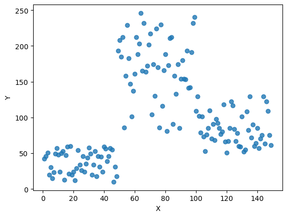 我们知道初始值的选取对结果的影响很大，对初始值选择的改进是很重要的一部分。在所有的改进算法中，K-means++ 最有名。
K-means++ 算法步骤如下所示：
- 随机选取一个中心点 ；
- 计算数据到之前 n 个聚类中心最远的距离 ，并以一定概率 选择新中心点 ；
- 重复第二步。
简单的来说，就是 K-means++ 就是选择离已选中心点最远的点。这也比较符合常理，聚类中心当然是互相离得越远越好。
但是这个算法的缺点在于，难以并行化。所以 k-means II 改变取样策略，并非按照 k-means++ 那样每次遍历只取样一个样本，而是每次遍历取样 个，重复该取样过程 次，则得到 个样本点组成的集合，然后从这些点中选取 个。当然一般也不需要 次取样，5 次即可。
1 | |
1 | |
<matplotlib.collections.PathCollection at 0x2e8afc39d00>
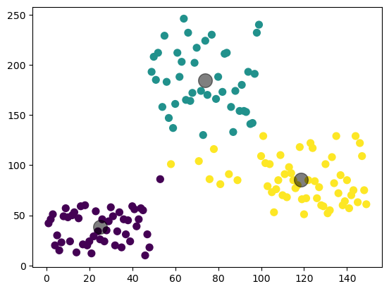
51 - Image Segmentation using K-means
1 | |
<matplotlib.image.AxesImage at 0x202a78459d0>
- 将图像变成一维的
1 | |
-
Now we apply the KMeans function. Before that we need to specify the criteria. My criteria is such that, whenever 10 iterations of algorithm is ran, or an accuracy of epsilon = 1.0 is reached, stop the algorithm and return the answer.
- 现在我们应用 KMeans 函数。在此之前，我们需要指定标准。我的标准是这样的，每当算法运行 10 次迭代，或达到 epsilon = 1.0 的精度时，停止算法并返回答案。
-
criteria : It is the iteration termination criteria. When this criteria is satisfied, algorithm iteration stops. Actually, it should be a tuple of 3 parameters. They are
( type, max_iter, epsilon ):-
它是迭代终止条件。当满足该条件时，算法迭代停止。实际上，它应该是一个包含 3 个参数的元组。
-
type of termination criteria. It has 3 flags as below:
- cv.TERM_CRITERIA_EPS - stop the algorithm iteration if specified accuracy, epsilon, is reached.
- 如果达到指定的精度 epsilon，则停止算法迭代。
- cv.TERM_CRITERIA_MAX_ITER - stop the algorithm after the specified number of iterations, max_iter.
- 在指定的迭代次数 max_iter 后停止算法。
- cv.TERM_CRITERIA_EPS + cv.TERM_CRITERIA_MAX_ITER - stop the iteration when any of the above condition is met.
- 当满足上述任何一个条件时，对迭代进行顶迭代。
- cv.TERM_CRITERIA_EPS - stop the algorithm iteration if specified accuracy, epsilon, is reached.
-
max_iter - An integer specifying maximum number of iterations.
- 指定最大迭代次数的整数。
-
epsilon - Required accuracy
- 所需的精度
-
1 | |
-
Clusters
-
attempts : Flag to specify the number of times the algorithm is executed using different initial labellings. The algorithm returns the labels that yield the best compactness. This compactness is returned as output.
- 标志指定使用不同初始标记执行算法的次数。该算法返回产生最佳紧凑性的标签。这种紧凑度作为输出返回。
-
flags : This flag is used to specify how initial centers are taken. Normally two flags are used for this : cv.KMEANS_PP_CENTERS and cv.KMEANS_RANDOM_CENTERS.
- 此标志用于指定如何获取初始中心。通常使用两个标志:cv.KMEANS_PP_CENTERS 和 cv.KMEANS_RANDOM_CENTERS。
-
compactness : It is the sum of squared distance from each point to their corresponding centers.
- 紧凑度:它是每个点到它们相应中心的距离平方和。
-
labels : This is the label array (same as ‘code’ in previous article) where each element marked ‘0’, ‘1’…
- 这是标签数组(与上一篇文章中的’code’相同)，其中每个元素标记为’0’，‘1’…
-
centers : This is array of centers of clusters.
- 这是集群中心的数组。
1 | |
- 将数组重新转成原来的形状
1 | |
-
最终将图像缩减成了只有 3 种颜色
-
Color Quantization is the process of reducing number of colors in an image. One reason to do so is to reduce the memory. Sometimes, some devices may have limitation such that it can produce only limited number of colors. In those cases also, color quantization is performed. Here we use k-means clustering for color quantization.
- 颜色量化是减少图像中颜色数量的过程。 这样做的一个原因是减少内存。 有时，一些设备可能有限制，例如它只能产生有限数量的颜色。 在这些情况下，还执行颜色量化。 这里我们使用 k-means 聚类进行颜色量化。
-
There is nothing new to be explained here. There are 3 features, say, R,G,B. So we need to reshape the image to an array of Mx3size (M is number of pixels in image). And after the clustering, we apply centroid values (it is also R,G,B) to all pixels, such that resulting image will have specified number of colors. And again we need to reshape it back to the shape of original image.
- 这里没有什么新东西要解释的。有三个特征，R,G,B。因此我们需要将图像重塑为 Mx3 大小的数组(M 为图像中的像素数)。在聚类之后，我们对所有像素应用质心值(它也是 R,G,B)，这样得到的图像将具有指定数量的颜色。我们需要重新塑造它回到原始图像的形状。
1 | |
array([[251, 251, 251],
[151, 151, 151],
[ 47, 47, 47]], dtype=uint8)
1 | |
<matplotlib.image.AxesImage at 0x202a83ac2b0>
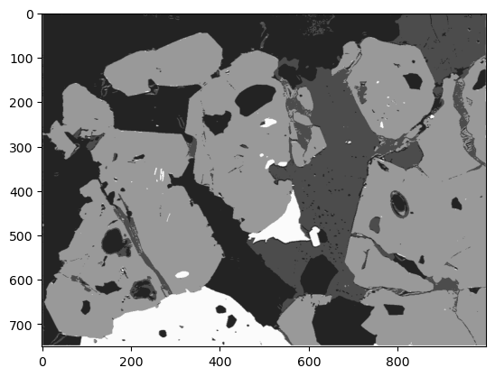
52 - What is GMM and how to use it for Image segmentation
1 | |
1 | |
- 图像被分成 0 和 1 两类
1 | |
<matplotlib.image.AxesImage at 0x1ee043bb4c0>
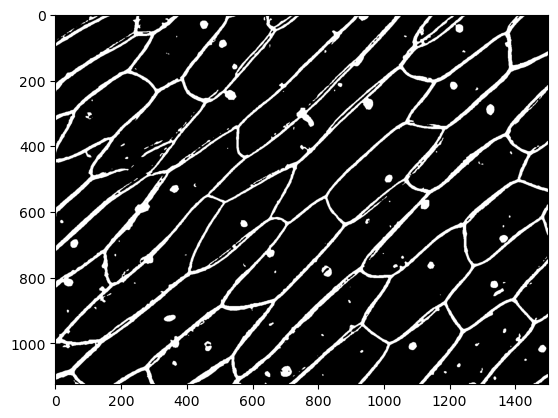
1 | |
<matplotlib.image.AxesImage at 0x1ee04598c10>
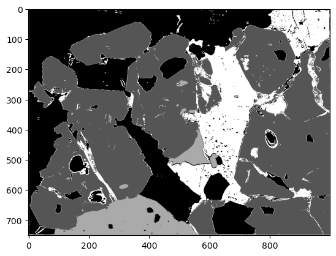
52b - Understanding Gaussian Mixture Model -GMM- using 1D- 2D- and 3D examples
- Demonstration of GMM on 1D, 2D, and 3D data.
For 1D
-
First we generate data by sampling random data from two normal distributions
- 首先，我们通过从两个正态分布中抽样随机数据来生成数据
-
Then, we decmpose it into 3 (or different number) gaussians.
- 然后，我们将其分解为3个(或不同的数字)高斯函数。
-
Finally, we plot the original data and the decomposed Gaussians.
- 最后，绘制了原始数据和分解后的高斯数据。
-
Do something similar for 2D and 3D cases…
- 对 2D 和 3D 情况做类似的事情……
-
Generate data, perform GMM and plot individual components.
- 生成数据，执行 GMM 并绘制单个组件。
1 | |
-
Create some data
-
Draw samples from different normal distributions so we get data that is good to demonstrate GMM. Different mean and Std. dev.
- 从不同的正态分布中抽取样本，这样我们得到的数据可以很好地演示 GMM。不同的平均值和标准。
-
Concatenate to create a single data set
1 | |
[<matplotlib.lines.Line2D at 0x1fc9d0cd7c0>]
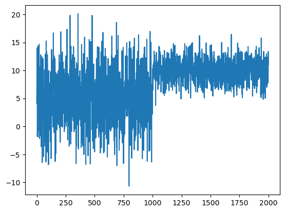
1 | |
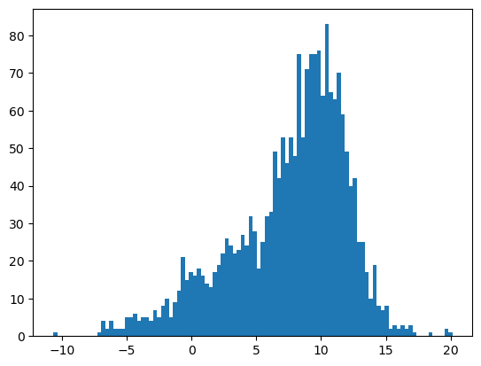
1 | |
- We created data from two normal distributions but for the fun of it let us decompose our data into 3 Gaussians. n_components=3
- 我们从两个正态分布创建了数据，但为了有趣，我们将数据分解为 3 个高斯分布。
1 | |
1 | |
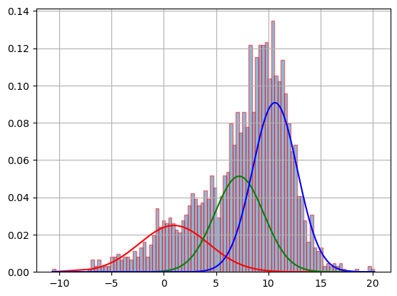
2D example
1 | |
- Generate some data
1 | |
<matplotlib.collections.PathCollection at 0x1fc9eac9310>
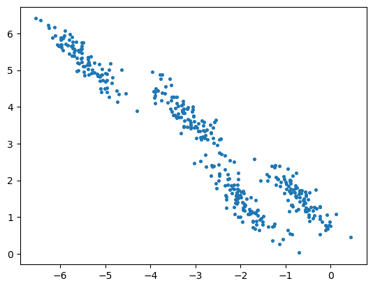
1 | |
1 | |
1 | |
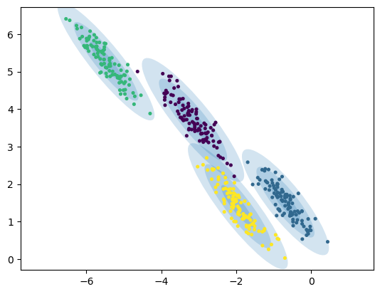
3D
1 | |
- Generate 3D data with 4 clusters set gaussian ceters and covariances in 3D
- 生成具有 4 个聚类的三维数据，集合高斯中心和三维协方差
1 | |
- Plot
1 | |
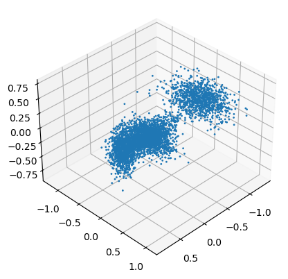
- Fit the gaussian model
1 | |
- Functions to visualize data 可视化数据的函数
1 | |
1 | |
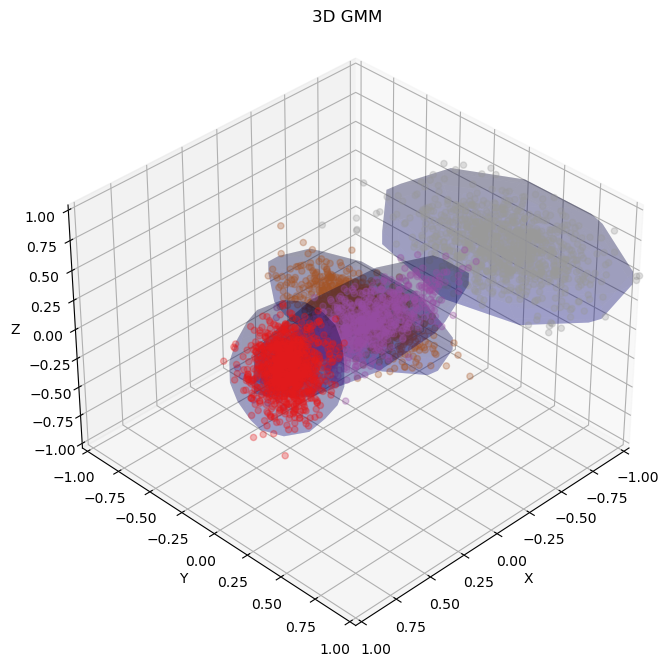
53 - How to pick optimal number of parameters for your unsupervised machine learning model
1 | |
<matplotlib.image.AxesImage at 0x2650b465fd0>
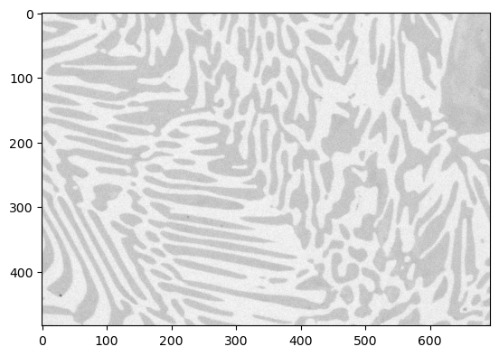
1 | |
1 | |
Text(0.5, 0, 'n_components')
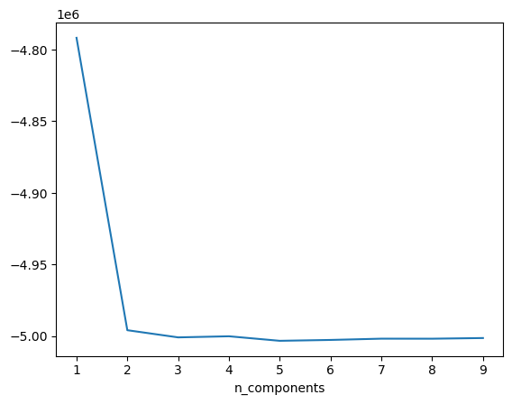
所以 n 取 2 最合适。
54 - Unsupervised and supervised machine learning - a reminder
比较 Unsupervised and supervised machine learning。